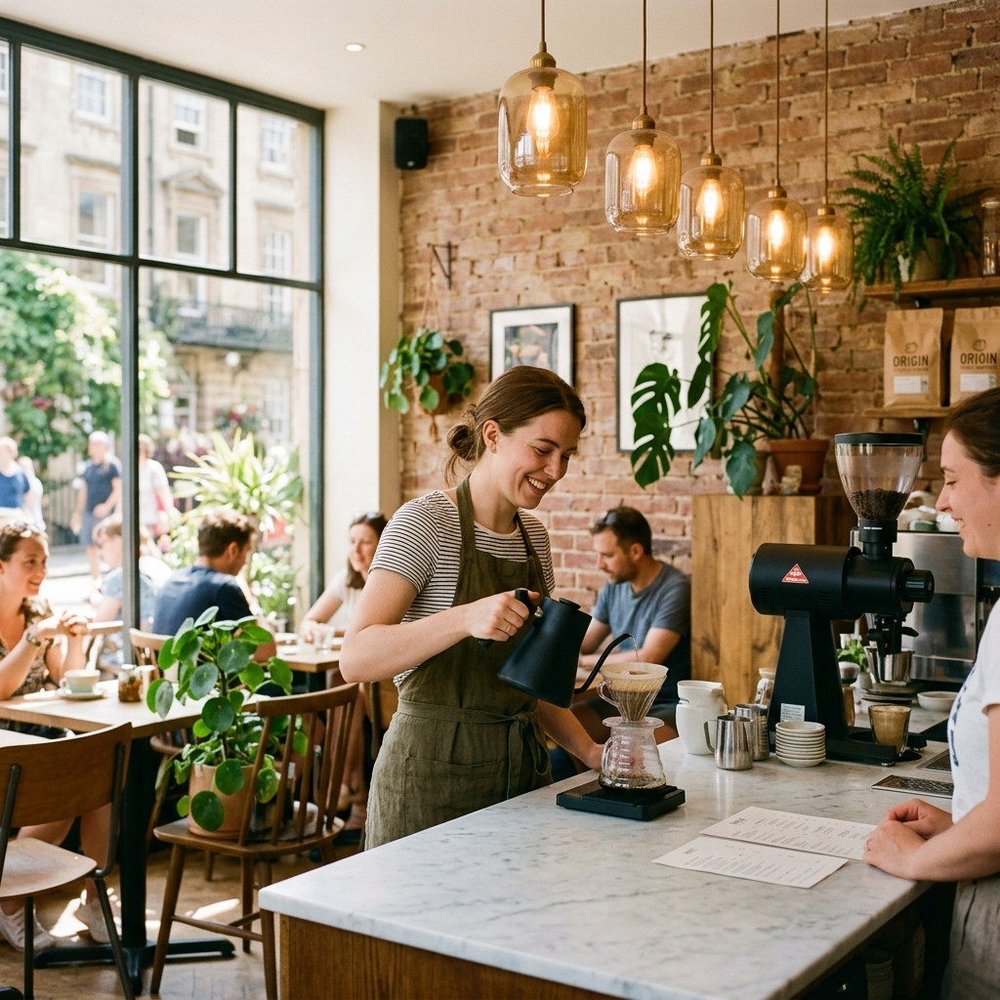

Our Story & Craft
Crafting community, celebrating intentional flavor, one cup at a time.
A Sanctuary for Thoughtful Living
Simple Café was born from a straightforward belief: great coffee shouldn't feel pretentious, and wholesome food shouldn't be rushed. We wanted to build a neighborhood home where friends reconnect, creatives draft their next passions, and anyone can take a deep breath over a hot cup of coffee.
Rooted in Ethical Sourcing
Every coffee cherry we grind has a lineage. We work directly with smallholder farming cooperatives across Huila (Colombia), Yirgacheffe (Ethiopia), and Antigua (Guatemala), paying far above fair-trade minimums. Back home in our roastery, we roast in small 12-kilo batches each Tuesday to maximize floral clarity and sweet caramel notes.
Our kitchen follows the same uncompromising philosophy: sourdough naturally leavened over 36 hours, scratch-made fruit jams, and organic produce sourced right here in the Pacific Northwest.

The Simple Café Philosophy
Everything we serve is an invitation to slow down and enjoy the moment.
Sustainable Footprint
From 100% compostable takeaway cups to donating spent grounds to urban gardens, our ecological footprint matters in every decision.
Scratch-Made Daily
No frozen doughs or artificial preservatives. Our bakeries, savory bowls, and syrups are whipped up fresh before sunrise each morning.
Inclusive Community
Whether you're studying for exams, hosting a book club, or grabbing a swift morning macchiato, you'll always be greeted with genuine warmth.